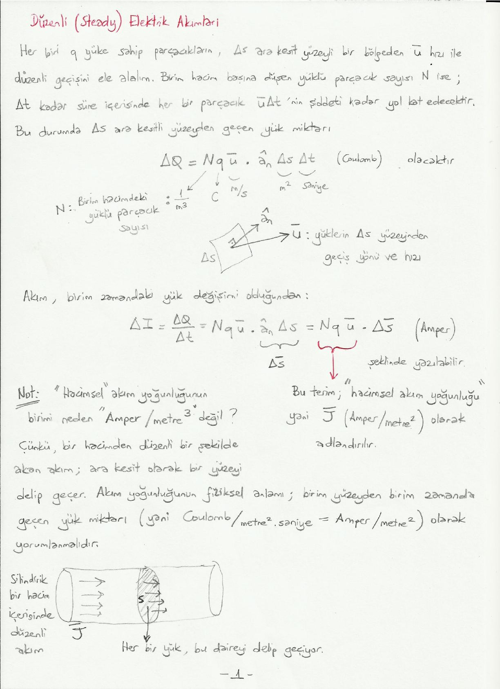

· EEM224
EEM224 Elektromanyetik I: Düzenli (Steady) Elektrik Akımları, Ohm Yasasının Nokta Formu ve Süreklilik Denklemi (El Yazısı Ders Notu)
EEM224 – Elektromanyetik I · 17.03.2015 · 16.10.2026
Bu yazı, Başkent Üniversitesi EEM224 Elektromanyetik I dersine ait el yazısı ders notlarının "Düzenli (Steady) Elektrik Akımları" bölümüdür (4 sayfa). Notta hazırlayanın adı ve tarih yazmıyor. Metin ve formüller yazıya döküldü; akım yoğunluğu çizimleri için bir sayfa görseli eklendi. Taranmış notun orijinal PDF'i yazının sonunda indirilebilir.
Akım yoğunluğu
Her biri q yüküne sahip parçacıkların, Δs ara kesit yüzeyli bir bölgeden ū hızı ile düzenli geçişini ele alalım. Birim hacim başına düşen yüklü parçacık sayısı N ise Δt kadar süre içerisinde her bir parçacık ūΔt'nin şiddeti kadar yol kat edecektir. Bu durumda Δs ara kesitli yüzeyden geçen yük miktarı
ΔQ = N q ū · â_n Δs Δt (coulomb)
olacaktır. Burada N birim hacimdeki yüklü parçacık sayısı (1/m³), q yük (C), ū yüklerin Δs yüzeyinden geçiş yönü ve hızı (m/s), Δs alan (m²), Δt süredir (saniye).
Akım, birim zamandaki yük değişimi olduğundan:
ΔI = ΔQ / Δt = N q ū · â_n Δs = N q ū · Δs̄ (amper)
şeklinde yazılabilir. Buradaki N q ū terimi "hacimsel akım yoğunluğu", yani J̄ (amper/metre²) olarak adlandırılır.
Not: "Hacimsel" akım yoğunluğunun birimi neden "amper/metre³" değil? Çünkü bir hacimden düzenli bir şekilde akan akım, ara kesit olarak bir yüzeyi delip geçer. Akım yoğunluğunun fiziksel anlamı, birim yüzeyden birim zamanda geçen yük miktarı (yani coulomb/metre²·saniye = amper/metre²) olarak yorumlanmalıdır. Silindirik bir hacim içerisinde düzenli akımda her bir yük, ara kesitteki daireyi delip geçiyor.
Not 2: Bu durumda yüzeyden akan bir akım (yani bir yüzey akımı) varsa onun birimi de J̄_s (amper/metre) olacaktır, çünkü bir yüzeyin ara kesiti bir doğru (veya doğru parçası) olacaktır. Yüzey akım yoğunluğunun fiziksel anlamı, birim uzunluktan birim zamanda geçen yük miktarı (yani coulomb/metre·saniye = amper/metre) olarak yorumlanmalıdır. Bir yüzey üzerindeki düzenli akımda her bir yük, bu doğru parçasını delip geçiyor.

Konumuza dönecek olursak: bir S yüzeyinde hacimsel akım yoğunluğu J̄'nin oluşturduğu akı aslında bize akımı verir:
I = ∫_S J̄ · ds̄ (A)
Burada J̄ (A/m²), ds̄ (m²) birimindedir.
Elektron mobilitesi ve iletkenlik
Metalik iletkenlerin içerisinde elektronların hızı, "elektron mobilitesi (μ_e)" olarak adlandırdığımız skaler bir büyüklük ile doğru orantılıdır:
ū = −μ_e Ē (m/s)
Burada μ_e'nin birimi m²/(V·s), Ē'nin birimi V/m'dir. J̄ = N q ū şeklinde tanımlanmıştı. Buradan
J̄ = −N e μ_e Ē
Burada e bir elektronun yükü (1,6×10⁻¹⁹ coulomb), N e μ_e terimi de σ, yani "iletkenlik" (conductivity). Elektron mobilitesi (μ_e) her bir cisme/ortama has bir özellik olduğu için iletkenlik (σ) de her bir cisme/ortama has bir özelliktir. Mükemmel iletken olarak kabul ettiğimiz cisim/ortamlarda μ_e → ∞ ve σ → ∞ varsayarız.
Not: Elektronun yükü q = −e alınırsa J̄ = N q ū = N(−e)(−μ_e Ē) = N e μ_e Ē olur. Notta J̄ = −N e μ_e Ē yazılmış; σ = N e μ_e tanımı ve hemen ardından gelen J̄ = σĒ ile tutarlı olması için ifadenin eksi işaretsiz olması gerekir.
Ohm yasasının genel hâli
J̄ = σ Ē
Burada J̄ (A/m²), Ē (V/m) ve σ (A/(V·m) = ℧/m ya da siemens/m) birimindedir. Benzerlik: I = G V veya I = V / R (Ohm yasası).
Neden genel hâli? Devre analizi dersinde V = IR ifadesi için aralarındaki potansiyel farkı ve eşdeğer direnci ölçmek için "iki" nokta gerekmektedir. Ancak J̄(x₀, y₀, z₀) = σ(x₀, y₀, z₀) Ē(x₀, y₀, z₀) ifadesi uzaydaki tek bir (x₀, y₀, z₀) noktası için (yani ikinci bir noktaya gerek olmaksızın) yazılabilir. Bu yüzden bu ifadeye "Ohm yasasının nokta formu" veya "Ohm yasasının genel hâli" adı verilmektedir.
Süreklilik denklemi
"Yüklerin korunumu" prensibi fiziksel olarak temel gerçeklerimizden biridir. S yüzeyi tarafından çevrelenen bir v hacmi düşünelim. Bu hacimde Q kadar yükümüz olsun. Eğer bu hacimden dışarı doğru bir I akımı varsa, birim zamanda hacimdeki toplam yükün düşüş miktarı bu I akımına eşit olmalıdır. (Veya hacimden içeri doğru bir I akımı varsa, birim zamandaki yük artış miktarı I'ya eşit olmalıdır.)
Hacimden dışarı çıkan akım, hacmi çevreleyen S yüzeyi üzerinde akım yoğunluğu vektörü tarafından oluşturulan akıya eşit olacaktır:
I = ∮_S J̄ · ds̄
Öte yandan:
I = −dQ/dt = −(d/dt) ∫_v ρ dv
olarak yazılabilir. Diverjans teoremi ile de ∮_S J̄ · ds̄ = ∫_v (∇ · J̄) dv'dir. Buradan
∫_v (∇ · J̄) dv = −∫_v (∂ρ/∂t) dv
yazılabilir; burada −(d/dt) ∫_v ρ dv = −∫_v (∂ρ/∂t) dv. Neden kısmi türev? Çünkü ρ uzay koordinatlarına da bağlı olabilir!
Bu ifade v'den bağımsız olduğuna göre (yani her şekil ve boyuttaki v için geçerli olduğuna göre) aslında integrali alınan değerler birbirine eşit olmalıdır:
∇ · J̄ = −∂ρ/∂t
Bu denkleme "süreklilik denklemi" adı verilir. Birimler: ∇ (1/m) · J̄ (A/m²) → A/m³; ∂ρ/∂t → C/(s·m³) = A/m³.
Düzenli akımlarda yük yoğunluğu zamanla değişmez; yani ∂ρ/∂t = 0:
∇ · J̄ = 0
Düzenli akımların akım yoğunluğu vektörleri solenoidaldir; kapalı döngüler oluşturur. Bu ifade integral formunda
∮_S J̄ · ds̄ = 0
şeklinde yazılabilir. Devre analizi dersinde bir düğüm noktasına giren/çıkan akımların toplamı Σ_j I_j = 0 (Kirchhoff'un akım yasası) idi; ∮_S J̄ · ds̄ = 0 ifadesi Kirchhoff akım yasasının genel hâlidir.